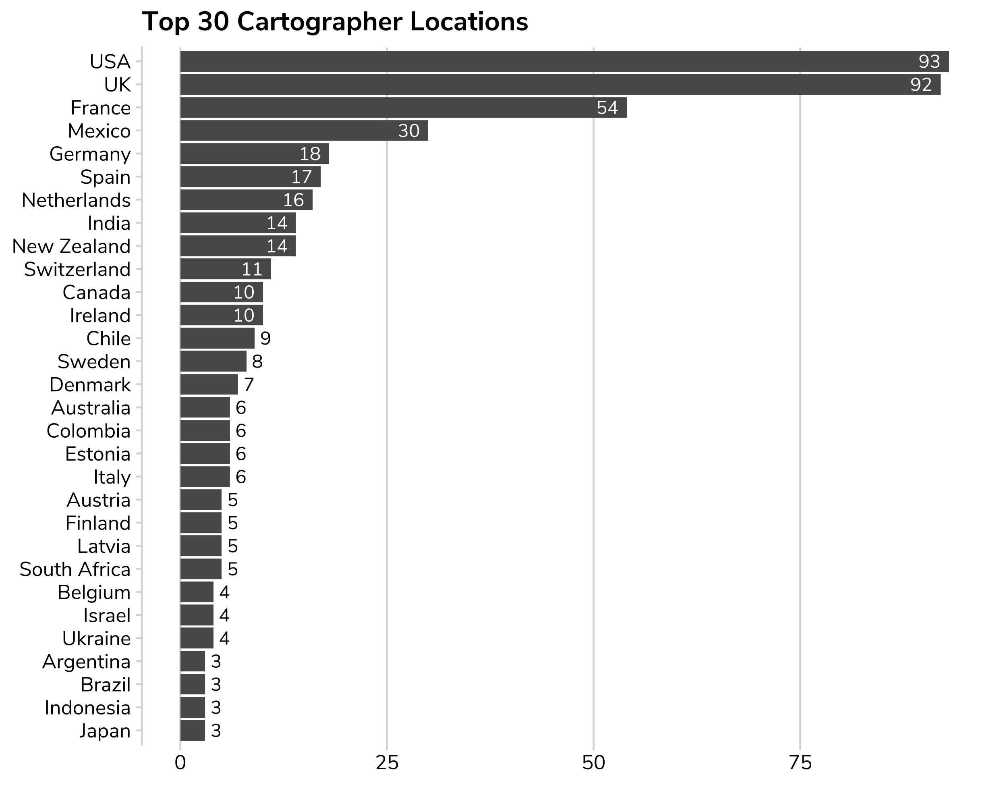
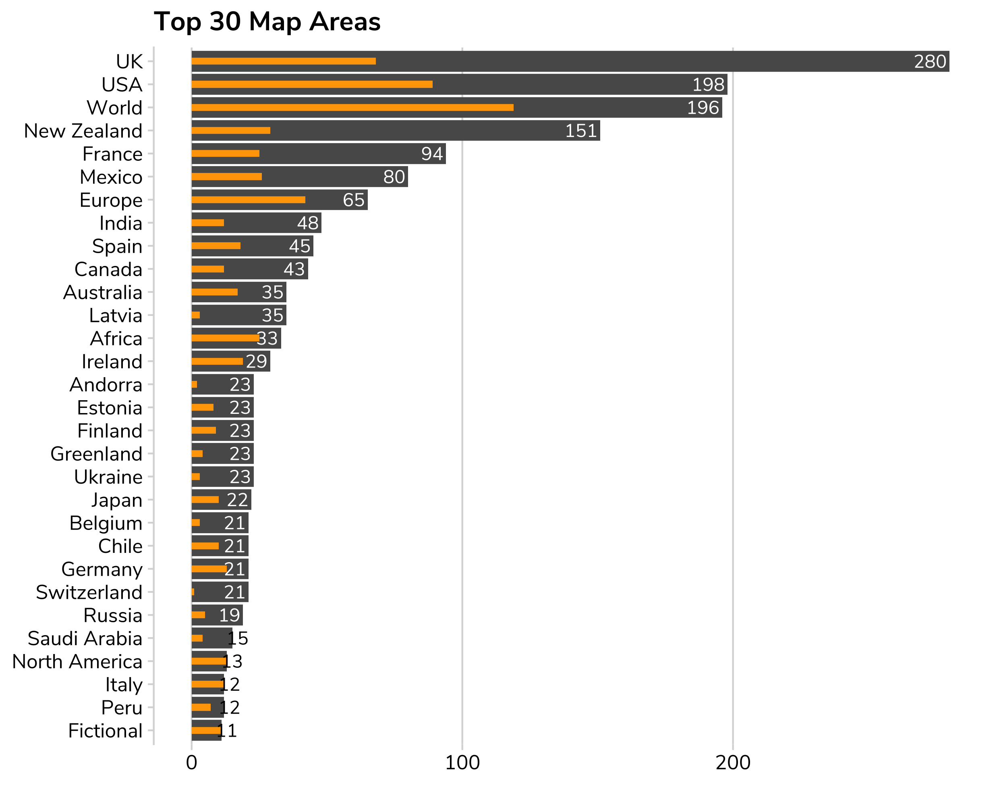
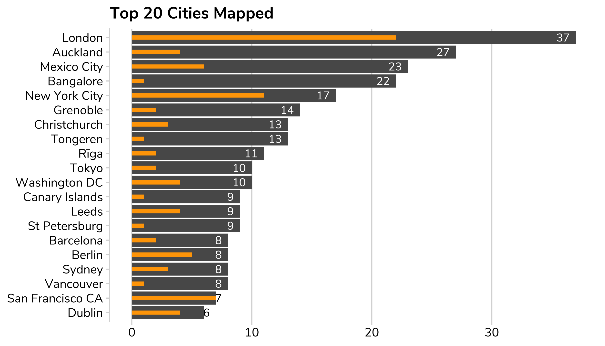
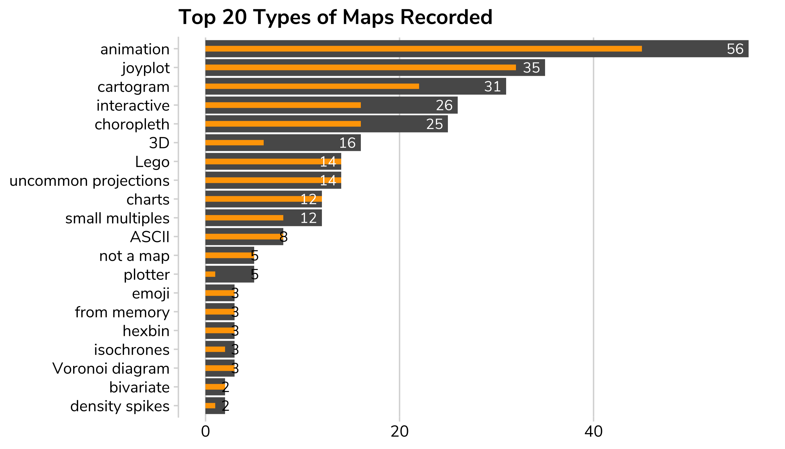
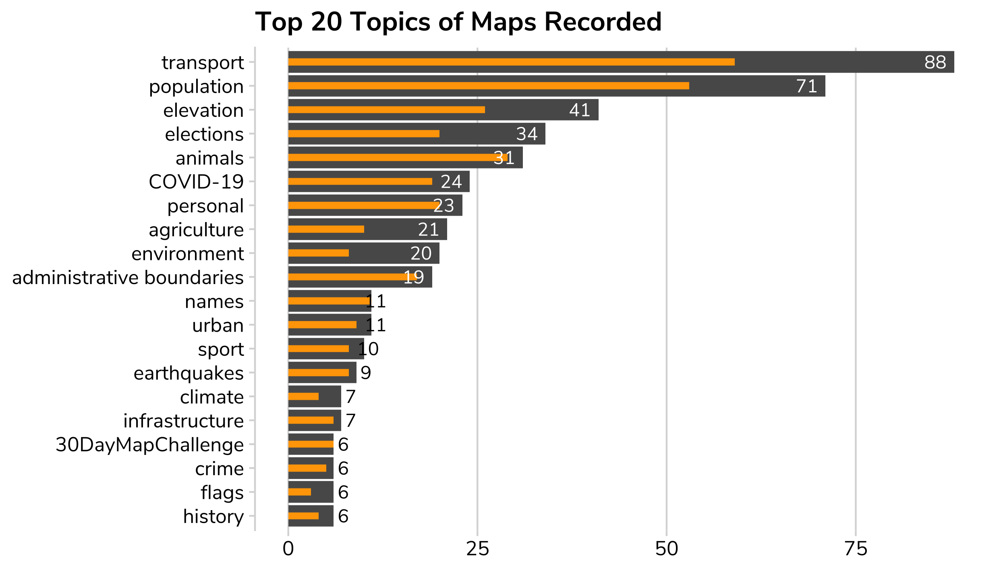

There have been at least 1378 people tweeting on the hashtag. Currently I've indexed 6882 maps by 797 people.
Every map that appears here has been assigned a day/challenge by me but the majority of the other classifications will take months without the wonders of crowdsourcing!
The graphs below should give you an idea of progress...
There were 67 people who managed the massive task of creating all 30 maps! (If you're not on this list and should be then let me know.)
Currently only 66.3% of cartographers have a country assigned to them.
Currently only 26.9% have an area assigned (ie continent or country) and only 6.9% have a city assigned (though many don't need one).
The main bar is the number of maps with that label. The small orange bar is the number of cartographers who have produced the maps in that area.
 Currently only 33.5% have any tools assigned. I have/will automate harvesting as much information included in tweets as I can, but many tweets don't mention tools. Please add your missing tool info! üôè
Currently only 4% have the type of map assigned. This is a manual and semi-subjective classification, so please feel free to contribute.
Currently only 7.8% have topics assigned. This is a manual and semi-subjective classification, so please feel free to contribute.
